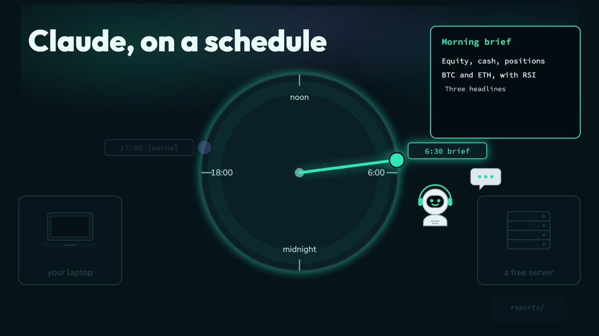
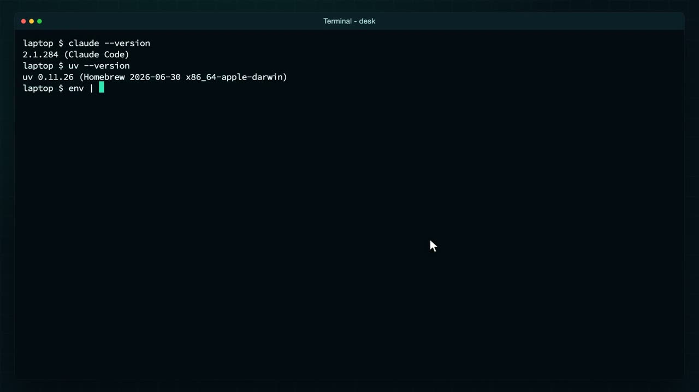
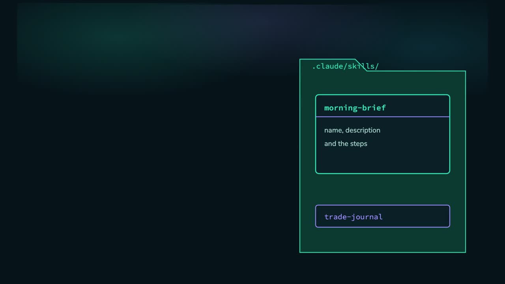
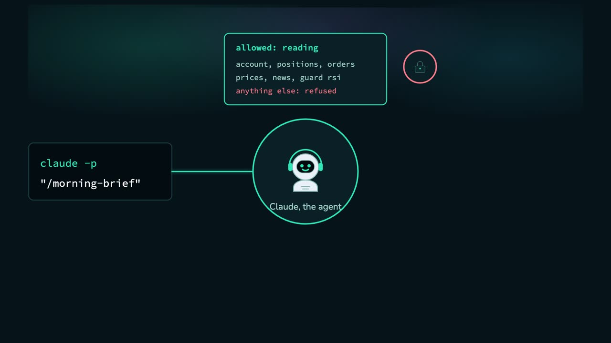
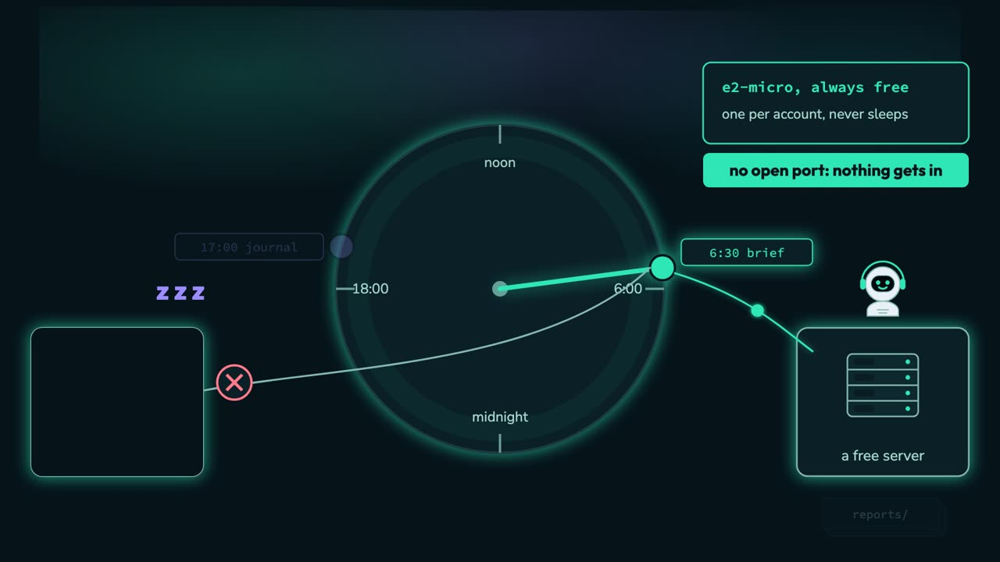
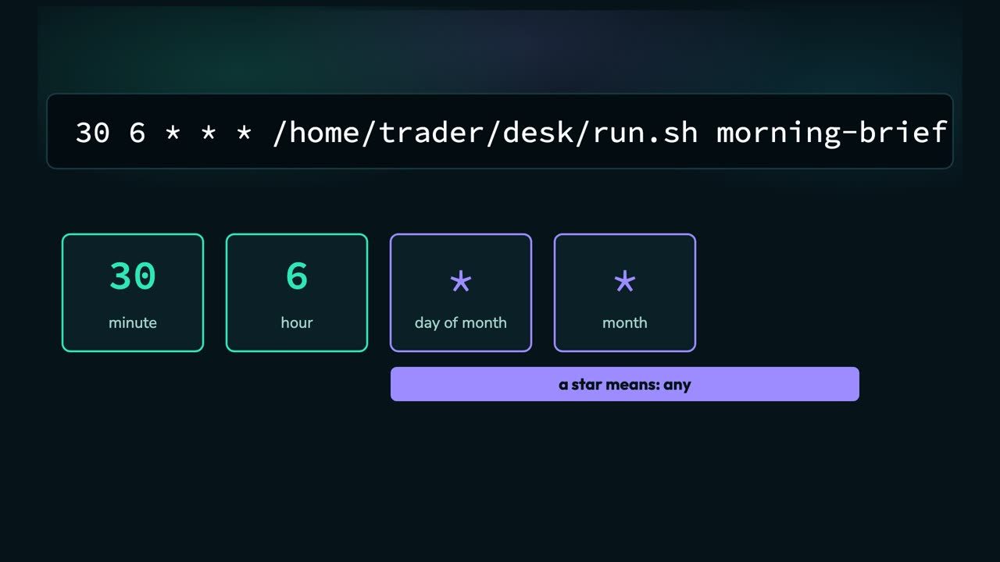
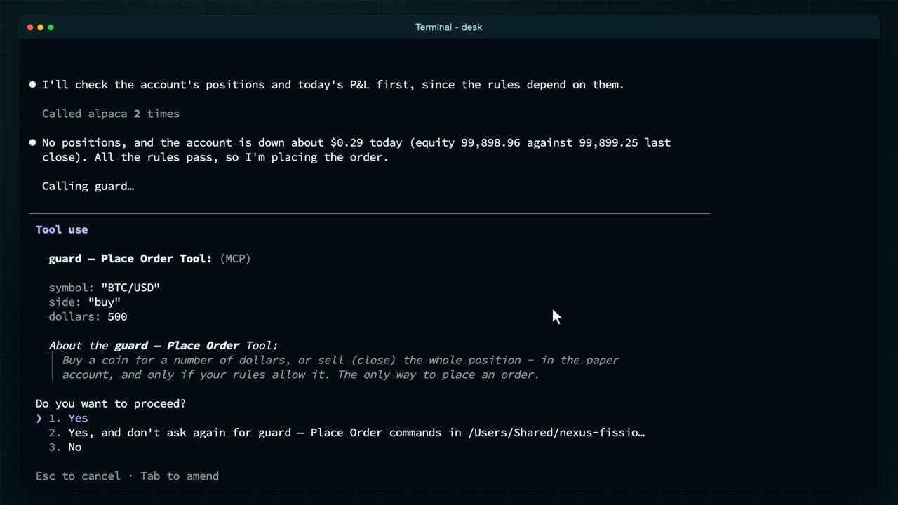
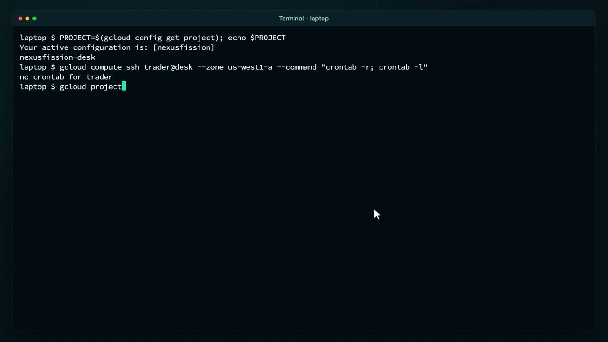

Lessons / AI trading, step by step
My AI agent writes my trading brief at 6:30am, with nobody at the keyboard (Claude Code + cron)
Two Claude Code skills - a morning brief and an evening trade journal - run by cron on a free Google Cloud e2-micro, read-only, with the keys in Secret Manager. Built on the laptop, scheduled on the server, proved live. Paper trading only.
Prices and numbers are as of the video's publication, October 7, 2026.
The code for this lesson: github.com/nexusfissioncode/algo-trading/tree/main/scheduled-agents
Where we are Watch from 0:00

So far, Claude works for us only while we sit there and type. Today it becomes an agent that starts work when we are not there. Every morning at half past six, before you are even awake, it reads your account and the market, decides what matters, and writes you a brief.
The account, bitcoin and ether with their R S I, the three headlines that matter, what last night's journal said, and the one thing to watch today. And every evening at five, it writes the day up in a trade journal.
With nobody at the keyboard. We build it on the laptop, then hand it to a free server that never sleeps.
This is the fifth video in a series. The first connected Claude to a paper trading account at Alpaca. The second had a TradingView alert wake Claude up to trade.
The third moved that bot onto a free Google Cloud server, and the fourth gave Claude your own trading rules, in code, in a small server of your own called the guard. All four are linked in the description.
You do not need them for this one. Everything this video uses is set up again from nothing, and if you already have it, the chapter list lets you skip ahead.
Setup Watch from 1:17

Here is everything this video needs, in a fresh terminal, with nothing assumed. First, is Claude Code installed? Claude, dash dash version.
Claude Code, installed. If you do not have it yet, the install page is linked in the description: one line in a terminal, then run Claude once and sign in. Next, U V.
U V runs a Python program together with the packages it needs, so you never install anything by hand. Then the Alpaca keys.
They sit in two environment variables, set from a file, as in the first video. This line prints the word set instead of the keys, so they never appear on screen. And this folder?
It holds the guard from the last video: a small M C P server that offers Claude an R S I tool, and an order tool that checks your rules. Now I add Alpaca's own server here.
Added. Claude can read the account through it: the balance, the positions, the orders, prices and news. And then the guard, started with U V run.
Added too. Both are written into this folder's M C P settings file, with the names of the key variables, never the keys themselves. Claude M C P list checks on them.
Pending approval. A server written into a folder's settings only runs once you say yes, so I start Claude here, and it asks about the two new servers. I enable both, then type slash M C P to see them.
Alpaca, connected, with all its tools.
And the guard, with its two. Claude can read the account and the market, and the only way it can trade is through your rules.
Those keys come from Alpaca's dashboard. I'm signed in to the paper account called NexusFission Trading, and the home page opens with the account's chart and balances.
Down here is the A P I keys card. Generate new keys there, copy the secret the moment it is shown, because it is shown once, and put both into your variables. Everything in this video runs on paper money, and none of it is financial advice.
One more thing to set up. A Claude that runs at half past six has nobody to click sign in for it. So, once, on your own machine, run Claude setup token. It opens your browser, you approve it with your Claude account,
and it prints a long token, valid for a year. I am not showing mine: it is as secret as a password, because anyone holding it can use your Claude.
Put it in a variable, in the same file as the Alpaca keys. With it, Claude Code signs in on its own, with no browser at all. That is everything. Now, the first new idea.
Your first skill Watch from 3:57

A skill is a recipe Claude follows. It is one file, the skill file, with a name, a description that tells Claude when to use it, and then the steps, in plain words. Ours says: read only, never trade. Then the account, positions, the two coins, the headlines, last night's journal, and how to end.
Each skill is a folder called skills, inside the project's hidden Claude folder. We have two: the morning brief, and the trade journal for the evening.
To run one, type a slash and its name in Claude Code. Let us look at the real file.
In the project folder, I list the skills folder.
One folder per skill: morning brief and trade journal. Here is the morning brief's file.
First, its name. That is what you type after the slash.
Then the description. Claude reads this to decide when the skill fits, so say plainly what it is for.
Then the recipe, starting with the most important line: read only. Never place, change or cancel an order. A routine that runs while you sleep looks, it does not touch.
The steps name the tools to use, like the guard's R S I tool from the last video, so Claude never works the number out by itself.
And the last lines say what the answer should look like: short, for a phone screen, ending with one thing to watch. Now I start Claude, and type slash morning brief.
Claude loads the recipe and works through it, calling the tools it needs, one after another. Every one of them only reads, so none of them stops to ask me. I've sped up the waiting.
And there is the brief. Equity a shade under $100,000, the open bitcoin position, bitcoin around 84,000 with an R S I of 56, ether a little over 2700, and the headlines.
To get there, Claude called Alpaca and your guard eight times: the account, the positions, the prices, the R S I and the news.
And it ends the way the recipe asked: watch whether bitcoin holds above 83,000. That is the brief, made by hand. Now let us take my hands away.
No one typing Watch from 6:02

Claude Code has a second way to run. Claude, dash P, followed by a prompt: it does the work, prints the answer and exits. No conversation, no keyboard. The prompt can be a skill. And this is not a fixed script: each run, the agent reads the recipe, decides which tools to call and in what order, and writes up what it finds.
But nobody is there to say yes. So we decide in advance what it may use: the reading tools, and nothing else. Anything not on the list is refused, not asked about. The guard's order tool is not on it, so the routine can never trade. One catch I hit: Claude normally finds M C P tools with a built-in search tool, so with built-in tools off, my first run said no tools are connected. One setting fixes it, as we will see.
The answer goes into a file, one per day, to read whenever you like. All of that lives in one small script.
A program started by a timer does not get your terminal's variables, so the keys go in a file. I create a small hidden file for them, and set it so only my user can read it. Then three lines, each one writing a variable into the file. The screen shows the variable names; the values go straight into the file.
Only the owner can read it or write it.
And it holds the two Alpaca keys and the Claude token, printed here as the word set. Now the script that runs a skill, in two halves.
First, where to find Claude, U V and gcloud. A timer starts with almost nothing on its path.
Then a line I learned the hard way: with built-in tools off, Claude cannot find its M C P tools unless they load up front.
Then the keys. On the laptop, they come from the file. On the server, later, they come from somewhere safer.
The second half. The list of tools it may use: the guard's R S I, and Alpaca's tools that read. No tool that trades.
Then Claude, dash P, with the skill and today's date, and the end of the journal piped in. No built-in tools at all.
Permission mode, don't ask. A tool that is not on the list is refused straight away, instead of waiting for a yes that nobody will ever give. The answer is saved to a file in reports.
And one line per run goes into the run log, so the next morning you can see that it ran, and when. Let us run it: the run script, with morning brief. No Claude window this time. The answer arrives in the terminal, written by the same recipe.
There is the brief: bitcoin near 83 and a half thousand, an R S I of 46, and the line to watch.
Saved, with a line in the run log, so tomorrow you can see that it ran.
And in reports, one file for today. That is a routine with nobody at the keyboard. The only thing missing is somebody to start it at half past six, and a machine that is awake then.
A machine that never sleeps Watch from 8:57

Here is the catch with the laptop. At half past six it is asleep, with the lid shut, and a sleeping laptop runs nothing. The brief simply never happens.
So the agent moves house, to a machine that never sleeps: Google Cloud's always free e two micro, the server from the third video. It is free for one small machine per account, and if you already run one, a second costs a few dollars a month, so we set a $1 budget alert first.
This server is simpler than last time. Nothing has to reach it: no web address, no open port. It wakes up on its own clock, reaches out to Alpaca and to Claude, and writes its reports. Everything is done from the laptop with gcloud, Google's command line, in a project made just for this.
From the laptop, in a terminal. The gcloud command line is installed and signed in, as in the third video, and set to a project made just for this, so deleting it later removes everything at once. I keep its name in a variable.
Nexus Fission desk. Then I switch on the three Google services we need: machines, Secret Manager and budgets. That takes a few seconds. Then I read which billing account pays for this project, into a variable as well.
A budget of $1 on this project. If anything here starts to cost money, an email arrives at 50 cents, and again at a dollar. Now the machine itself.
An e two micro, running Debian, with a 30 gigabyte standard disk, in a free region. The last option, cloud platform, lets the machine ask Google's own services for things, which is how it will read the keys later.
Running. I give it 60 seconds to boot, sped up here, then step inside with gcloud compute S S H, as a user called trader. Google makes the user and the login key for you the first time.
The prompt says trader at desk: every command from here runs on the server. It has one gigabyte of memory, and installing Claude Code wants more, so first a swap file: a spare gigabyte on the disk it can use as memory, kept across restarts.
There it is. Then U V, with its one line installer, and Claude Code, with its own.
Both go into a folder in the home directory, so I add that folder to the path, and check the versions.
Claude Code, the same as on the laptop.
U V, which will run the guard server on this machine.
And gcloud is already there on Google's own image. The run script uses it to fetch the keys. That is the machine, so I log out.
Now the keys. The server should not hold a copy of my key file lying on its disk. Google Cloud has Secret Manager: a locked box inside the project. From the laptop, print f sends the key's value straight into gcloud secrets create, and it is never shown.
Stored, as version one of a secret named like the variable. The same for the Alpaca secret key, and for the Claude token. Then the list.
Three secrets, one locked box. Nobody can read them yet, not even the server. So I look up the server's own service account, the identity it uses with Google, and give it one role: secret accessor.
It may read them, and nothing more. The run script fetches them each time it runs, keeps them in memory, and forgets them when it finishes. Now the files.
Everything in this folder goes across, except the hidden file with the keys. That one stays on the laptop. I make a folder on the server, and gcloud compute S C P copies the rest.
The skills, the guard and its rules, the M C P settings, the run script and the schedule. All on the server, with no keys in any of it.
On a schedule Watch from 12:39

Who starts it at half past six? Cron. Every Linux machine has it: a clock that runs commands at the times you list, in a file called the crontab. One line per job, and each line is five fields, then the command.
The first two say how many minutes past which hour. 30, six: half past six in the morning.
Then the day of the month, the month, and the day of the week. A star means any, so this runs every day of every month.
And then the command: the run script, with morning brief. Cron only wakes the agent up; what it reads and what it writes, the agent decides. The journal is the same line with zero, 17: five in the evening.
Back on the server, in the desk folder. First, what time does it think it is?
U T C, the time in London in winter. Cron uses the server's clock, so half past six would come in the middle of my night. I set the server's time zone to mine, Los Angeles.
Now it is Pacific time. Here is the schedule file.
30, six, star star star: every day at half past six, the run script with the morning brief.
And zero, 17: every day at five in the evening, the journal. Crontab with the file's name installs it, and crontab dash L lists it.
Installed. But I do not want to wait until half past six to prove it, so I add one test line, worked out on the server itself: the time two minutes from now, with the morning brief.
It is 20 past midnight on the server, and the test line says 22 minutes past. Now I watch the log with tail, and wait.
Nobody touches anything now, and I've sped up the wait. At 22 minutes past, cron starts the run script on its own. It fetches the keys from Secret Manager, starts Claude with the skill, and Claude reads the account and the market through the two M C P servers, then writes the brief. It takes less than 60 seconds.
And there it is in the log: morning brief saved, at 22 minutes past midnight. Nobody typed that. I stop watching and open the report.
The brief, written by the server: the account, bitcoin around 83 and a half thousand with an R S I of 48, ether, the headlines, and watch the 83,000 support. Last, I put the schedule back without the test line.
Two jobs left: the brief at half past six and the journal at five. From now on it runs every day, whether my laptop is open or not.
The evening journal Watch from 15:07

A journal needs a trading day, so let us make one. On the laptop, in Claude, I ask for a trade, and it goes through the guard.
Buy $500 of bitcoin. Claude checks the positions and today's loss first, because the rules depend on them.
Then it calls the guard's order tool. That one is not on the allowed list, so Claude stops and asks me.
I say yes. A trade always needs a person; only reading runs alone.
Placed: no position held, nowhere near the daily loss limit, and under the thousand dollar cap. Now the evening journal, on the server.
The second skill, the trade journal. The same shape as the brief: read only, today's orders, the open position, the day's change in dollars.
And this step: earlier entries may be in your input, so compare today with them. The run script feeds it the end of the journal file, so every evening is measured against the ones before. I run it by hand now; cron runs it at five. The warning before the entry only says this folder's own permission list is ignored on the server. The run script passes its own list, so nothing changes.
Tonight's entry: a sell, then my buy. The sell was me, emptying the account before recording, and the journal calls it churn. Fair.
Saved as a report, and added to the end of the journal file. Let me count the lines.
The journal has its first entry, and the log has two runs. Tomorrow at half past six, the brief will read this entry and tell me what it said.
Two jobs, one clock Watch from 16:38

And when you want it to stop, there are two levels. I have finished filming, so I do both. First the schedule: crontab dash R, run on the server, removes the jobs.
No crontab for trader: nothing will run at half past six. To be rid of everything, delete the project.
Deleted: the machine, its disk and the three secrets, all at once. Nothing is left to bill you.
So that is the whole day. At half past six, the brief. Through the day, the bot from the earlier videos can still answer alerts through your guard. At five, the journal.
And they talk to each other: tonight's journal goes into tomorrow's brief, so every morning starts from what you learned the night before. Both only read, so neither can trade while you are away, and each run costs a little of your Claude usage, about 60 seconds of work.
The skills, the run script, the crontab and every command are in the description. Next time, one Claude becomes several: a researcher, a risk manager and a trader, handing work to each other, in an agent app of your own.